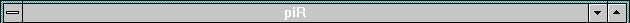
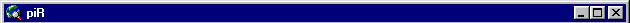

|
Marre des fenêtres à bord bleu tristounettes ? Marre du menu démarrer ? Marre des icones de Billou "standard Microsoft" ?? Voilà une page qui va vous donner quelques trucs, quelques adresses pour vous permettre de faire ressembler votre Windows à quelques chose de plus sympathique !
 Ce à quoi on peut facilement arriver :
Ce à quoi on peut facilement arriver :
 |
bureau_spica.jpg : Voilà un exemple de bureau personnalisé. En l'occurence, cette capture est celle de mon PC de travail, Spica. Les outils utilisés sont Window Blinds et E-Icons 98, ainsi que la mise à jour du bureau de IE 4.01 SP1. |

 Le nom du PC (NetBios) :
Le nom du PC (NetBios) :
Quant on est en réseau, c'est la première chose à choisir, et pas forcément la plus facile... Voici quelques jolis noms d'étoiles :
Alamak |
Arcturus |
Mira |
Albireo |
Betelgeuse |
Mizar |
Alcor |
Canopus |
Procyon |
Aldebaran |
Deneb |
Rigel |
Algol |
Dubhe |
Sirius |
Altaïr |
Erakis |
Spica |
Antares |
Mérak |
Vega |
Le nom NetBios de l'ordinateur (à ne pas confondre avec le nom DNS, le premier apparait dans le voisinage réseau) est modifiable dans le panneau de configuration Réseau, à l'onglet "Identification". Pour que votre ordinateur apparaisse dans le voisinage réseau, il faut installer le "Fichiers et imprimantes partagés pour les réseaux Microsoft" (serveur SMB).

 Les papiers peints :
Les papiers peints :
 Les icones :
Les icones :
 Pour le reste...
Pour le reste...
 Adresses utiles :
Adresses utiles :